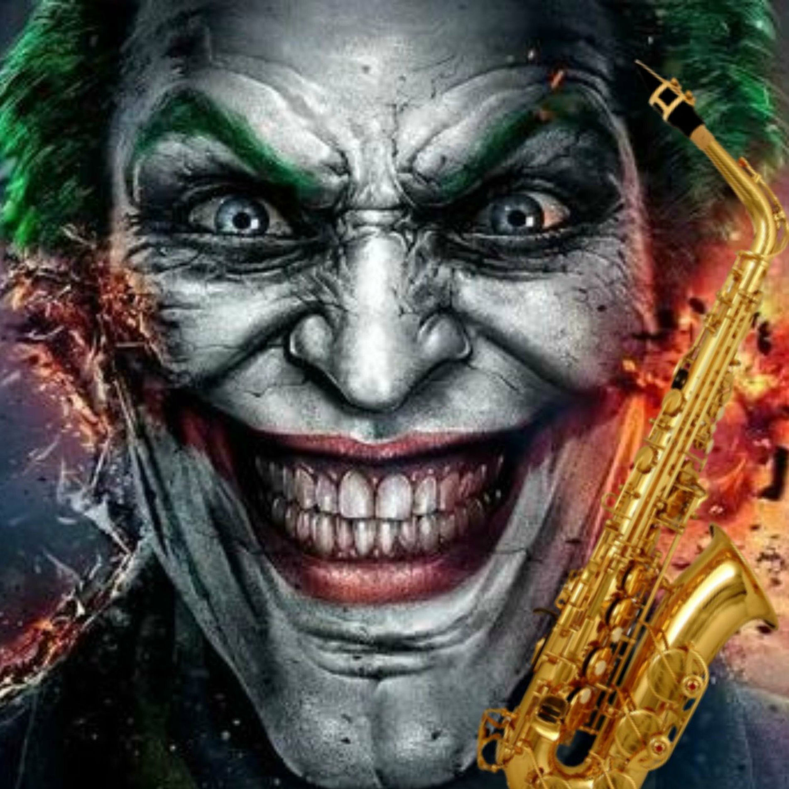
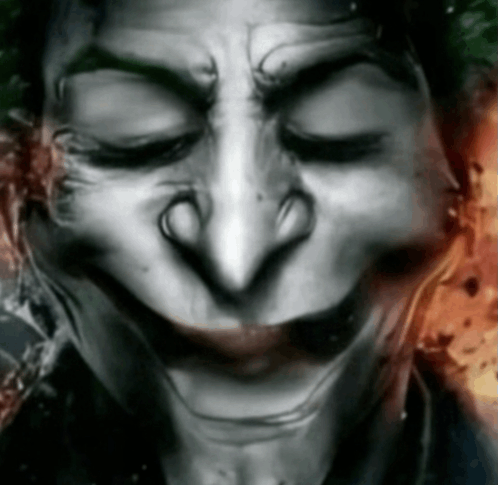
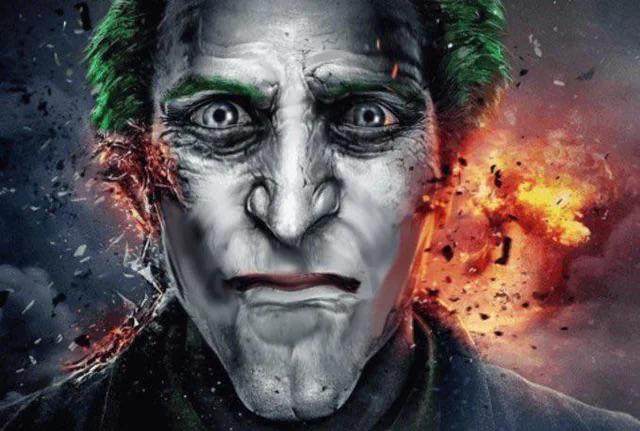

O vilão mais sádico da ficção
CORINGA: O SANGUINÁRIO PALHAÇO INIMIGO DO BATMAN


ÚLTIMAS NOTÍCIAS
CORINGA CAPTURA ROBIN E TRANSMITE TORTURA AO VIVO
09/12/2019
Hoje foram divulgadas imagens ao vivo do criminoso Coringa realizando torturas desumanas com o braço-direito
de Batman. Após ser questionado, o malfeitor declarou que apenas queria brincar com Dick Grayson.
( LEIA MAIS SOBRE... ){kind=link}
CORINGA INAUGURA SUA PRIMEIRA LUTA CONTRA SCORPION NO MORTAL KOMBAT
22/11/2018
O assassino clinicamente insano mais famoso de Gotham City acaba de canonizar sua participação nas lutas
mortais da franquia de MORTAL KOMBAT. Sua primeira batalha do cartel será contra o lutador Scorpion.
( LEIA MAIS SOBRE... ){kind=link}
CORINGA DECLARA SEU ENVOLVIMENTO PÚBLICO COM O CORINTHIANS
01/09/1910
Na manhã dessa quinta-feira, o supervilão Coringa expôs à público seu apoio e envolvimento com o recém-fundado
Sport Club Corinthians Paulista. Segundo ele, apoiar o clube é apenas para os loucos de verdade.
( LEIA MAIS SOBRE... ){kind=link}